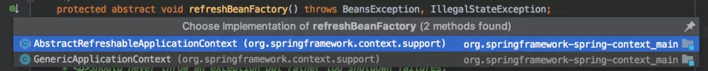
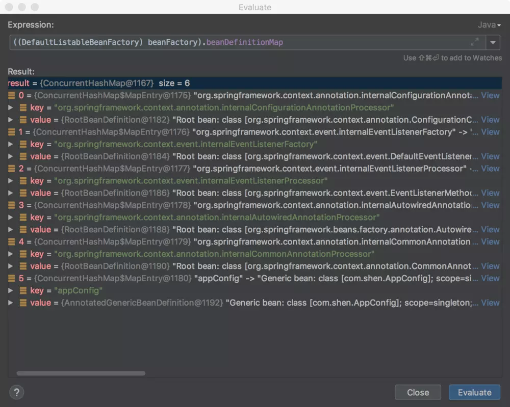
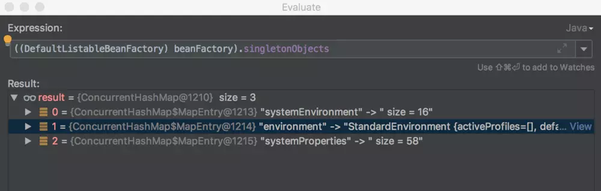
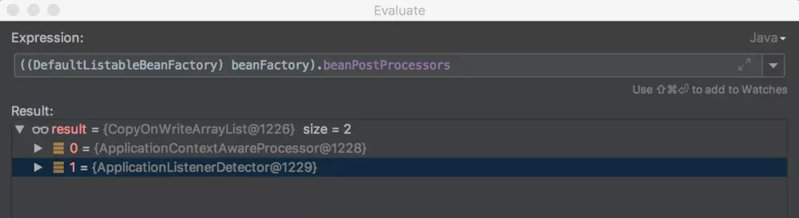
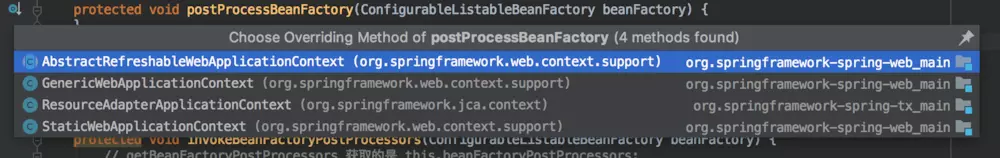

原文连接:https://www.cnblogs.com/coderxiaohei/p/11643929.html
接上回分析完register(annotatedClasses);后，现在来看一下refresh();方法。
// new AnnotationConfigApplicationContext(AppConfig.class); 源码
public AnnotationConfigApplicationContext(Class<?>... annotatedClasses) {
//调用默认无参构造器,里面有一大堆初始化逻辑
this();
//把传入的Class进行注册,Class既可以有@Configuration注解,也可以没有@Configuration注解
//怎么注册? 委托给了 org.springframework.context.annotation.AnnotatedBeanDefinitionReader.register 方法进行注册
// 传入Class 生成 BeanDefinition , 然后通过 注册到 BeanDefinitionRegistry
register(annotatedClasses);
//刷新容器上下文
refresh();
}refresh方法
点开refresh();方法，里面调用了超级多的方法，我们一个个来看。
public void refresh() throws BeansException, IllegalStateException {
synchronized (this.startupShutdownMonitor) {
// Prepare this context for refreshing.
//准备上下文,设置其启动日期和活动标志,执行属性源的初始化
prepareRefresh();
// Tell the subclass to refresh the internal bean factory.
//调用子类 refreshBeanFactory()方法
//获取 BeanFactory 实例 DefaultListableBeanFactory , DefaultListableBeanFactory 实现了 ConfigurableListableBeanFactory 接口
ConfigurableListableBeanFactory beanFactory = obtainFreshBeanFactory();
// Prepare the bean factory for use in this context.
//配置 beanFactory 上下文
//1.添加 ApplicationContextAwareProcessor 和 ApplicationListenerDetector
//2.忽略部分类型的自动装配
//3.注册特殊的依赖类型，并使用相应的autowired值
//4.注册默认的environment beans
//5.设置environment beans
prepareBeanFactory(beanFactory);
try {
// Allows post-processing of the bean factory in context subclasses.
//留给子类去扩展的一个方法
postProcessBeanFactory(beanFactory);
// Invoke factory processors registered as beans in the context.
invokeBeanFactoryPostProcessors(beanFactory);
// Register bean processors that intercept bean creation.
registerBeanPostProcessors(beanFactory);
// Initialize message source for this context.
initMessageSource();
// Initialize event multicaster for this context.
initApplicationEventMulticaster();
// Initialize other special beans in specific context subclasses.
onRefresh();
// Check for listener beans and register them.
registerListeners();
// Instantiate all remaining (non-lazy-init) singletons.
finishBeanFactoryInitialization(beanFactory);
// Last step: publish corresponding event.
finishRefresh();
} catch (BeansException ex) {
if (logger.isWarnEnabled()) {
logger.warn("Exception encountered during context initialization - " +
"cancelling refresh attempt: " + ex);
}
// Destroy already created singletons to avoid dangling resources.
destroyBeans();
// Reset 'active' flag.
cancelRefresh(ex);
// Propagate exception to caller.
throw ex;
} finally {
// Reset common introspection caches in Spring's core, since we
// might not ever need metadata for singleton beans anymore...
resetCommonCaches();
}
}
}prepareRefresh();
prepareRefresh();做的事情比较简单：准备上下文，设置其启动日期和活动标志，执行属性源的初始化。
protected void prepareRefresh() {
// Switch to active.
this.startupDate = System.currentTimeMillis();
this.closed.set(false);
this.active.set(true);
if (logger.isDebugEnabled()) {
if (logger.isTraceEnabled()) {
logger.trace("Refreshing " + this);
} else {
logger.debug("Refreshing " + getDisplayName());
}
}
// Initialize any placeholder property sources in the context environment.
//这是一个空方法,AnnotationConfigApplicationContext 并没有 Override 改方法
initPropertySources();
// Validate that all properties marked as required are resolvable:
// see ConfigurablePropertyResolver#setRequiredProperties
getEnvironment().validateRequiredProperties();
// Store pre-refresh ApplicationListeners...
if (this.earlyApplicationListeners == null) {
//默认情况下,earlyApplicationListeners 为 null
this.earlyApplicationListeners = new LinkedHashSet<>(this.applicationListeners);
} else {
// Reset local application listeners to pre-refresh state.
this.applicationListeners.clear();
this.applicationListeners.addAll(this.earlyApplicationListeners);
}
// Allow for the collection of early ApplicationEvents,
// to be published once the multicaster is available...
this.earlyApplicationEvents = new LinkedHashSet<>();
}obtainFreshBeanFactory();
protected ConfigurableListableBeanFactory obtainFreshBeanFactory() {
refreshBeanFactory();
return getBeanFactory();
}refreshBeanFactory(); 是一个抽象方法，它有两个具体是实现：

AnnotationConfigApplicationContext 继承 GenericApplicationContext，所以很显然此处执行的应该是GenericApplicationContext类中的方法。GenericApplicationContext的refreshBeanFactory()源码如下：
//GenericApplicationContext#refreshBeanFactory 源码
@Override
protected final void refreshBeanFactory() throws IllegalStateException {
if (!this.refreshed.compareAndSet(false, true)) {
throw new IllegalStateException(
"GenericApplicationContext does not support multiple refresh attempts: just call 'refresh' once");
}
this.beanFactory.setSerializationId(getId());
}obtainFreshBeanFactory();方法最后调用 getBeanFactory();方法，并且返回ConfigurableListableBeanFactory对象。
getBeanFactory();，顾名思义就是获取BeanFactory，Spring中使用的是 DefaultListableBeanFactory，该类也同时实现了ConfigurableListableBeanFactory接口。
prepareBeanFactory(beanFactory);
prepareBeanFactory(beanFactory);源码比较简单：
protected void prepareBeanFactory(ConfigurableListableBeanFactory beanFactory) {
// Tell the internal bean factory to use the context's class loader etc.
beanFactory.setBeanClassLoader(getClassLoader());
beanFactory.setBeanExpressionResolver(new StandardBeanExpressionResolver(beanFactory.getBeanClassLoader()));
beanFactory.addPropertyEditorRegistrar(new ResourceEditorRegistrar(this, getEnvironment()));
// Configure the bean factory with context callbacks.
//增加 BeanPostProcessor 实例 ApplicationContextAwareProcessor
//ApplicationContextAwareProcessor 主要作用是对 Aware接口的支持,如果实现了相应的 Aware接口，则注入对应的资源
beanFactory.addBeanPostProcessor(new ApplicationContextAwareProcessor(this));
//默认情况下，只忽略BeanFactoryAware接口,现在新增忽略如下类型的自动装配
beanFactory.ignoreDependencyInterface(EnvironmentAware.class);
beanFactory.ignoreDependencyInterface(EmbeddedValueResolverAware.class);
beanFactory.ignoreDependencyInterface(ResourceLoaderAware.class);
beanFactory.ignoreDependencyInterface(ApplicationEventPublisherAware.class);
beanFactory.ignoreDependencyInterface(MessageSourceAware.class);
beanFactory.ignoreDependencyInterface(ApplicationContextAware.class);
// BeanFactory interface not registered as resolvable type in a plain factory.
// MessageSource registered (and found for autowiring) as a bean.
//注册自动装配规则,如果发现依赖特殊类型，就使用该指定值注入
beanFactory.registerResolvableDependency(BeanFactory.class, beanFactory);
beanFactory.registerResolvableDependency(ResourceLoader.class, this);
beanFactory.registerResolvableDependency(ApplicationEventPublisher.class, this);
beanFactory.registerResolvableDependency(ApplicationContext.class, this);
// Register early post-processor for detecting inner beans as ApplicationListeners.
beanFactory.addBeanPostProcessor(new ApplicationListenerDetector(this));
// Detect a LoadTimeWeaver and prepare for weaving, if found.
if (beanFactory.containsBean(LOAD_TIME_WEAVER_BEAN_NAME)) {
beanFactory.addBeanPostProcessor(new LoadTimeWeaverAwareProcessor(beanFactory));
// Set a temporary ClassLoader for type matching.
beanFactory.setTempClassLoader(new ContextTypeMatchClassLoader(beanFactory.getBeanClassLoader()));
}
// Register default environment beans.
//注册默认的environment beans.
if (!beanFactory.containsLocalBean(ENVIRONMENT_BEAN_NAME)) {
// Environment
beanFactory.registerSingleton(ENVIRONMENT_BEAN_NAME, getEnvironment());
}
if (!beanFactory.containsLocalBean(SYSTEM_PROPERTIES_BEAN_NAME)) {
// System Properties
beanFactory.registerSingleton(SYSTEM_PROPERTIES_BEAN_NAME, getEnvironment().getSystemProperties());
}
if (!beanFactory.containsLocalBean(SYSTEM_ENVIRONMENT_BEAN_NAME)) {
// System Environment
beanFactory.registerSingleton(SYSTEM_ENVIRONMENT_BEAN_NAME, getEnvironment().getSystemEnvironment());
}
}ApplicationContextAwareProcessor
prepareBeanFactory(beanFactory);方法中往beanFactory中添加了一个ApplicationContextAwareProcessor对象：beanFactory.addBeanPostProcessor(new ApplicationContextAwareProcessor(this));。
ApplicationContextAwareProcessor类实现了BeanPostProcessor接口，其中主要是 Override 了postProcessBeforeInitialization方法，其作用主要是用来对 Aware系列接口的支持，发现Bean实现了Aware系列接口，就调用其相应的方法，具体为哪些Aware接口，请查看源码：
//ApplicationContextAwareProcessor#postProcessBeforeInitialization 源码
public Object postProcessBeforeInitialization(final Object bean, String beanName) throws BeansException {
AccessControlContext acc = null;
if (System.getSecurityManager() != null &&
(bean instanceof EnvironmentAware || bean instanceof EmbeddedValueResolverAware ||
bean instanceof ResourceLoaderAware || bean instanceof ApplicationEventPublisherAware ||
bean instanceof MessageSourceAware || bean instanceof ApplicationContextAware)) {
acc = this.applicationContext.getBeanFactory().getAccessControlContext();
}
if (acc != null) {
AccessController.doPrivileged((PrivilegedAction<Object>) () -> {
invokeAwareInterfaces(bean);
return null;
}, acc);
} else {
invokeAwareInterfaces(bean);
}
return bean;
}
private void invokeAwareInterfaces(Object bean) {
if (bean instanceof Aware) {
if (bean instanceof EnvironmentAware) {
((EnvironmentAware) bean).setEnvironment(this.applicationContext.getEnvironment());
}
if (bean instanceof EmbeddedValueResolverAware) {
((EmbeddedValueResolverAware) bean).setEmbeddedValueResolver(this.embeddedValueResolver);
}
if (bean instanceof ResourceLoaderAware) {
((ResourceLoaderAware) bean).setResourceLoader(this.applicationContext);
}
if (bean instanceof ApplicationEventPublisherAware) {
((ApplicationEventPublisherAware) bean).setApplicationEventPublisher(this.applicationContext);
}
if (bean instanceof MessageSourceAware) {
((MessageSourceAware) bean).setMessageSource(this.applicationContext);
}
if (bean instanceof ApplicationContextAware) {
((ApplicationContextAware) bean).setApplicationContext(this.applicationContext);
}
}
}程序运行到这里，再看看一下Spring容器中有哪些数据：
6个
BeanDefinition对象3 个单例
Bean2 个
BeanPostProcessor
postProcessBeanFactory(beanFactory);
这是一个留给子类去拓展的空方法，AnnotationConfigApplicationContext类中的该方法没有做任何事情。

未完待续......
源码学习笔记：https://github.com/shenjianeng/spring-code-study
欢迎关注公众号：